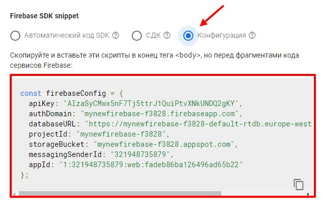
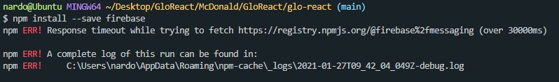
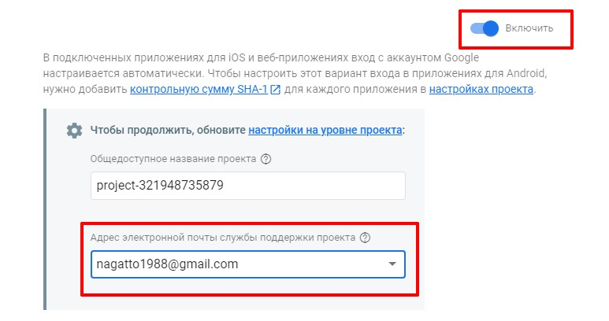
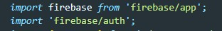
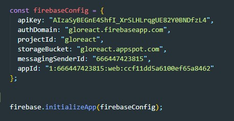
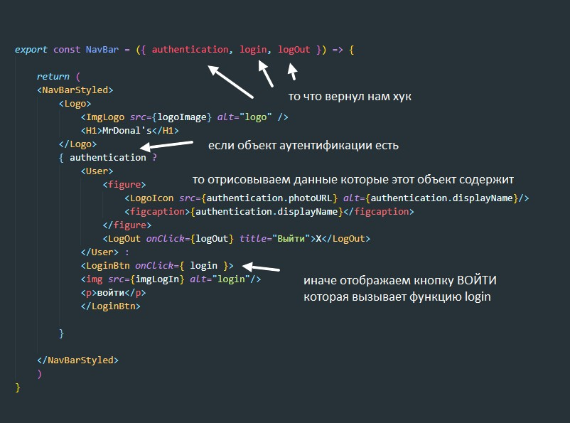

Заходим на FireBase и кликаем по кнопке 1 приложение
Откроется модальное окно в нем жмем шестеренку
Откроется страница с конфигурацией нашего приложения, прокручиваем в самы низ и находим там раздел Firebase SDK snippet. Здесь жмем на радио-кнопку Конфигурация и копруем объект который сгенерировал нам FireBase
Этот объект копируем в файл App.js
Для этого в консоли вводим команду
npm install firebase --saveВо время установки я один раз ловиш Warning
Разрешилось все тем что я открыл в папке .firebase файл hosting.YnVpbGQ.cache и удалил все содержимое. Ошибки при установке были вызваны переполненным кешом.
Заходим в консоль FireBase и выбираем там раздел Authentication. Жмем кнопку НАЧАТЬ РАБОТУ
В открывшемся окне выбираем GOOGLE, жмем индикатор ВКЛ и указываем адрес эл. почты для слыжбы поддержки проекта
Жмем СОХРАНИТЬ и возвращаемся в код
В разделе импортов в App.js добавляем две строчки:
В файлу App.js после того места где мы добавили объект с конфигурацией FireBase, обращаемся к firebase и вызываем у него метод - initializeApp. В качестве аргумента передаем ему объект с нашим конфигом fireBase
пример такого JSX
